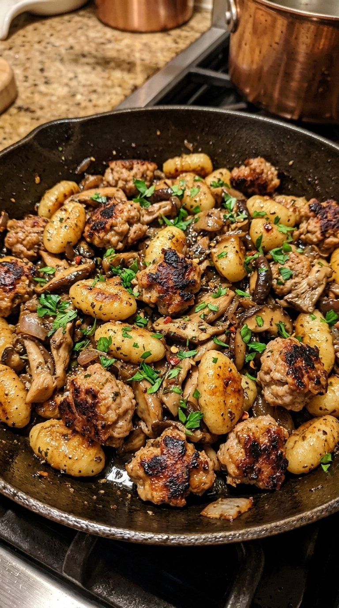
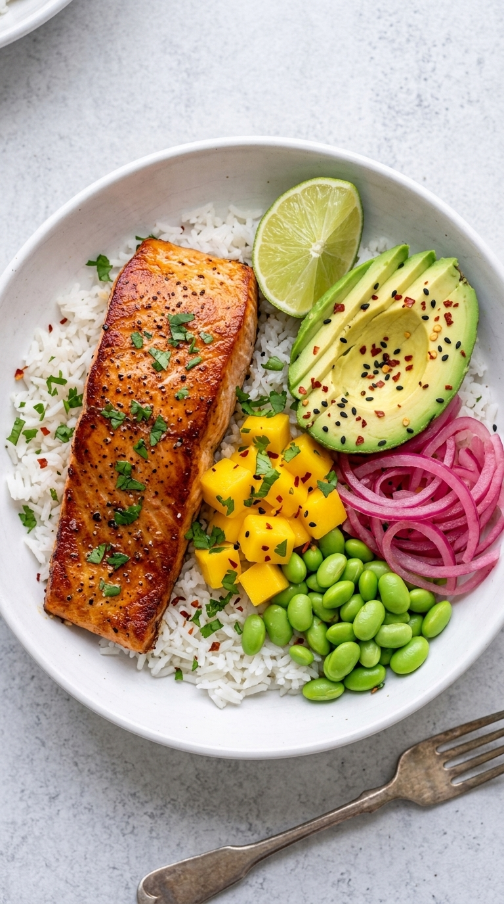
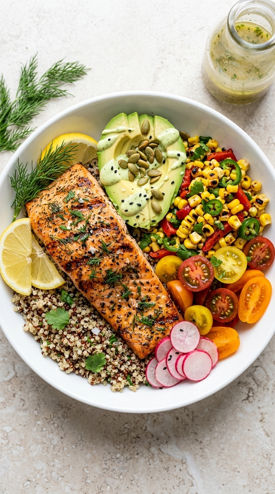

Lunch
Seared Salmon & Quinoa Bowl
A vibrant summer salad featuring seared salmon, tri-color quinoa, and fresh vegetables.
Browse the full Modish Menu recipe collection, or filter by category.
A vibrant summer salad featuring seared salmon, tri-color quinoa, and fresh vegetables.

A vibrant summer salad featuring a pan-seared salmon fillet, fresh avocado, and poached eggs on a bed of spinach and asparagus.

A healthy summer dinner recipe featuring juicy chicken breasts with a bright lemon-thyme glaze.

A sweet and savory honey garlic salmon dish perfect for a summer dinner.

A warm, gooey cookie loaded with chocolate and marshmallows, perfect for summer dessert cravings.

Gourmet small-batch cookies with rich brown butter, toasted pecans, and chewy toffee bits.

These thick, chewy chocolate chip cookies are made with browned butter and a mix of brown and granulated sugar for a deep, carame...

A summer dinner recipe featuring seared pork medallions with a savory glaze, served with roasted cherry tomatoes and fresh herbs.

A vibrant summer side dish featuring roasted fingerling potatoes, heirloom carrots, and parsnips with fresh herbs.

A comforting, creamy pasta dish with sausage, tortellini, spinach, and sun-dried tomatoes, perfect for a hearty dinner.

A vibrant summer platter featuring grilled chicken, fresh fruit, vegetables, and creamy hummus.

A refreshing summer salad with crisp greens, seasonal vegetables, and a light vinaigrette for a healthy summer meal.

A summer dinner recipe featuring seared duck breast served with creamy apple puree and a fresh summer salad.

A creamy pasta dish featuring fettuccine with black truffle and a side of fresh arugula salad.

A vibrant summer dinner featuring grilled salmon, quinoa, and a fresh arugula salad with tomatoes and cucumber.

A healthy summer dinner featuring a grain bowl with salmon, asparagus, and roasted tomatoes.
A vibrant summer dinner featuring seared salmon over a wild rice and quinoa blend, topped with grilled asparagus and roasted cher...

A healthy summer dinner featuring a perfectly seared salmon fillet served with crispy roasted potatoes and a fresh arugula salad.

A vibrant summer salad featuring black rice, seared salmon, soft-boiled eggs, and fresh vegetables.

A vibrant summer salad featuring grilled salmon, quinoa, and fresh vegetables.

A vibrant summer salad featuring teriyaki salmon, soft-boiled eggs, and pickled vegetables over rice.

Tender, slow-cooked pork shoulder with carrots and potatoes in a savory broth.

A healthy summer meal featuring grilled chicken meatballs, fluffy rice, and roasted vegetables.

A refreshing summer salad perfect for healthy summer meals and summer side dishes.

A succulent beef roast stuffed with blue cheese, spinach, and red onions, served in a cast iron skillet.

A rich, slow-cooked short rib stew with vegetables and fresh rosemary, served in a cast-iron skillet.

A hearty summer dinner recipe featuring a grilled pork chop sandwich filled with melted cheese, artichokes, and spinach.

A fresh summer salad perfect for healthy summer meals.

A healthy summer dinner recipe featuring a seared salmon fillet over ancient grains, roasted vegetables, and fresh asparagus.

A vibrant summer salad featuring grilled salmon, crisp veggies, and quinoa for a healthy summer dinner recipe.

A summer dinner recipe featuring tender pulled pork tacos topped with fresh radishes, cilantro, and creamy avocado crema.

A refreshing summer salad featuring ripe peaches, arugula, and a citrus vinaigrette.

A vibrant summer dinner featuring seared steak and scallops over herbed rice with lemon and almonds.

A vibrant summer dinner featuring a perfectly seared salmon fillet over a bed of tri-color quinoa, roasted cherry tomatoes, aspar...

A vibrant pasta salad with roasted vegetables, chickpeas, olives, and fresh herbs.

A vibrant summer pasta dish featuring fresh basil pesto, tender pasta, sun-dried tomatoes, and pine nuts.

A one-pan summer side dish featuring roasted cauliflower with feta, tomatoes, and olives.

A vibrant summer salad featuring roasted zucchini and colorful cherry tomatoes, topped with crumbled feta and fresh herbs.

A vibrant summer salad featuring roasted vegetables, chickpeas, feta, and fresh herbs, perfect for a healthy summer side dish.

A one-pan easy zesty side dish featuring roasted carrots with lemon-herb seasoning and whipped feta.

A vibrant summer salad featuring creamy burrata, seasonal stone fruits, and fresh berries on a bed of greens.

A vibrant summer salad featuring creamy burrata, roasted strawberries, heirloom tomatoes, and a fig-balsamic glaze.

A vibrant summer salad featuring ripe peaches, creamy burrata, toasted sourdough, and a bright citrus vinaigrette.

A vibrant summer salad packed with grains, fresh vegetables, and creamy avocado.

A vibrant summer salad featuring boiled potatoes, fresh tomatoes, olives, feta, and herbs, dressed in lemon and olive oil.

A vibrant summer salad packed with orzo, cherry tomatoes, cucumbers, olives, feta, and fresh herbs.

A vibrant summer salad featuring farro, roasted artichokes, cherry tomatoes, chickpeas, feta, and fresh basil.

Golden-brown, buttery garlic knots with fresh herbs and coarse salt, served with a side of melted butter for dipping.

Golden, flaky pull-apart buns topped with melted cheese, chives, and sun-dried tomatoes.

Golden-brown braided bread rolls topped with garlic, herbs, and sea salt, served in a ceramic baking dish with olive oil dip.

A low carb summer dinner recipe featuring baked salmon with melted cheese, asparagus, olives, and colorful vegetables.

A hearty, low-carb summer dinner featuring chicken, zucchini, peppers, and feta baked in a savory sauce.

A low-carb summer dinner featuring baked chicken topped with melted mozzarella, fresh basil, and roasted cherry tomatoes over zuc...

A rustic, golden-brown tart filled with earthy mushrooms, caramelized onions, and creamy goat cheese, perfect for a light summer...

A hearty summer soup featuring white beans, chicken, kale, and crusty bread.

A hearty summer dinner featuring chunks of salmon, scallops, and potatoes in a creamy broth.

A hearty summer salad featuring roasted root vegetables, green lentils, and a creamy herb dressing.

Flaky, golden brioche buns swirled with harissa and topped with crumbled feta and rosemary.

A hearty summer dinner bowl featuring roasted sweet potatoes, black beans, corn, ground meat, and melted cheese, topped with fres...

A hearty, low-carb skillet dinner featuring ground turkey, colorful peppers, and melted cheese.

A low-carb dinner featuring creamy chicken and spinach in a skillet.

A light and fresh summer salad recipe featuring creamy whipped ricotta on toasted bread, topped with colorful heirloom tomatoes,...

A vibrant summer salad with edible wildflowers and fresh greens for a healthy seasonal meal.

A fresh summer salad recipe featuring toasted sourdough topped with whipped ricotta, roasted tomatoes, and arugula.

A summer salad recipe featuring creamy avocado, a poached egg, and fresh arugula on seeded toast.

A vibrant summer salad featuring watermelon, mango, kiwi, dragon fruit, and coconut.

A vibrant summer salad featuring juicy mango, tart pomegranate, and fresh cilantro.

A hearty breakfast sandwich with scrambled eggs, melted cheese, crispy bacon, and fresh avocado on a toasted bun.

A hearty grilled sandwich filled with seasoned ground beef, melted cheese, jalapeños, and fresh cilantro.

A rich, creamy salmon dish with sun-dried tomatoes and spinach, perfect for a healthy summer dinner.

A decadent layered chocolate cake with peanut butter filling and chocolate ganache, perfect for any celebration.

A moist, spiced layer cake filled with pineapple and pecans, topped with banana slices and a creamy glaze.

A vibrant and hearty lentil dal featuring roasted cauliflower and butternut squash, served with rice and garnished with fresh spi...

A vibrant summer dinner featuring smoky cauliflower and peas in a creamy korma sauce served with rice.

A vibrant, creamy coconut red lentil dahl served with steamed rice and garnished with fresh cilantro, sliced red chilies, and a s...

A vibrant summer salad featuring roasted vegetables, fresh arugula, and creamy goat cheese over farfalle pasta.

A summer side dish featuring spaghettini tossed with whipped feta and roasted red peppers.

A vibrant summer salad featuring grilled shrimp, quinoa, and fresh vegetables.

A vibrant summer dinner recipe featuring sausage, orecchiette pasta, cherry tomatoes, bell peppers, and spinach in a lemon herb s...

A vibrant and healthy meal featuring shrimp, mango, and quinoa, ready in under 30 minutes.

A simple and flavorful summer dinner recipe featuring roasted chicken thighs and vegetables in a cast iron skillet.

A vibrant summer salad featuring roasted vegetables, quinoa, and avocado.

A creamy, savory mushroom risotto garnished with fresh thyme, parmesan, and black pepper.

A creamy, hearty soup loaded with potatoes, bacon, cheese, and fresh herbs.

Individual cakes with a molten caramel center and a cracked sugar crust, served with a pool of molten caramel.

A whole grilled seabass served with a vibrant citrus and fennel salad, roasted potatoes, and toasted bread.

A vibrant plate featuring grilled salmon, a hearty wheat berry salad with roasted squash and Brussels sprouts, and crispy roasted...

Delicate matcha crepes rolled with creamy filling and sweet red bean paste, dusted with matcha powder and garnished with raspberr...

Delicate yellow crepes filled with fluffy cream and fresh raspberries, dusted with powdered sugar.

A layered yellow sponge cake with mango filling and white cream, dusted with powdered sugar and garnished with mint.

Delicate white bread sandwiches filled with fluffy cream and colorful fresh fruit.

Elegant rolled crepes filled with creamy filling and fresh mango, served with a side of dipping sauce.

A rustic sourdough bowl filled with creamy mushrooms and melted cheese.

A rustic round loaf of sourdough bread topped with melted cheese and crumbled sausage, baked in a cast iron skillet.

A rustic sourdough bread bowl filled with melted cheese, spinach, artichokes, and pepperoni.

A rustic, golden-brown focaccia topped with roasted tomatoes, olives, and creamy cheese.

A vibrant orzo salad with cherry tomatoes, cucumbers, Kalamata olives, feta cheese, and a lemon-herb vinaigrette.

A fresh salad with red bell pepper, red onion, and cilantro.

A rich, moist three-layer cake with spiced pumpkin cake, creamy frosting, and topped with toasted pecans and candied ginger.

A moist, spiced carrot cake layered with creamy frosting and topped with walnuts and caramel.

Decadent, buttery shortbread topped with rich salted caramel and crunchy toasted pecans.

A moist, layered pumpkin cake with cream cheese frosting, walnuts, and dried cranberries.
A moist, layered pumpkin cake with cream cheese frosting, walnuts, and dried cranberries.

A beautifully plated meal featuring seared salmon, roasted asparagus, purple potatoes, and a fresh fennel salad.
A beautifully plated meal featuring seared salmon, roasted asparagus, purple potatoes, and a fresh fennel salad with citrus.

Delectable savory pastry bites a brunch delight.

A comforting, healthy breakfast option packed with oats, berries, and chocolate chips.

A savory-sweet tart featuring roasted beets, pears, and creamy goat cheese in a flaky pastry crust.

A savory tart featuring flaky pastry, earthy mushrooms, prosciutto, and creamy goat cheese, garnished with fresh thyme and hazeln...

A golden, flaky tart swirl served with poached pears, prosciutto, and whipped ricotta, drizzled with balsamic glaze and garnished...

A savory tart with a flaky crust, filled with earthy mushrooms, sweet pears, and salty prosciutto, topped with fresh herbs.

A layered dessert featuring creamy coconut chia pudding topped with a vibrant mixed berry compote and fresh fruit.

A vibrant, layered breakfast parfait featuring chia seeds, raspberry compote, and pistachio rose water cream.

A refreshing summer dessert featuring layers of creamy chia pudding, mango puree, and fresh figs.

A vibrant, layered breakfast parfait featuring creamy chia pudding, bright dragonfruit puree, and fresh mango chunks.

A vibrant summer dinner featuring spicy harissa chicken skewers, crispy sweet potato fries, and a fresh summer salad.

A vibrant summer pasta salad featuring glossy black garlic miso tempeh, buckwheat soba noodles, edamame, and fresh vegetables.

A vibrant summer salad featuring fresh shrimp, lime, and coconut.

A vibrant summer dinner featuring grilled steak and shrimp skewers with fresh vegetables, perfect for outdoor cooking.

A vibrant summer dinner featuring grilled steak and shrimp kabobs served over orzo salad with fresh vegetables and feta.

A hearty harvest vegetable bowl featuring a fresh summer salad base with roasted seasonal vegetables and a light vinaigrette.

A fresh and healthy summer salad featuring orzo pasta, roasted chicken, and Mediterranean vegetables.

A vibrant summer salad featuring roasted vegetables, quinoa, and chickpeas, dressed in a tangy harissa vinaigrette.

A vibrant and plant-forward summer salad featuring nutty farro, grilled halloumi, and fresh vegetables with a lemon-herb vinaigre...

These vibrant fritters paired with a fresh chickpea salad make for one of our favorite healthy summer recipes.

A light and vibrant summer pasta salad perfect for warm afternoons.

A layered dessert featuring fresh strawberries, creamy whipped topping, and crumbly shortcake in individual glass cups.

A luxurious summer lunch featuring smoked salmon, soft-boiled eggs, fresh fruit, and artisanal breads on a wooden board.

A beautifully arranged charcuterie board featuring a variety of cheeses, cured meats, fresh fruit, olives, and breads, perfect fo...

A top-down view of a colorful salad bowl filled with various ingredients like greens, vegetables, and possibly grains, with a for...

A vibrant summer salad packed with grilled chicken, quinoa, and fresh vegetables.

A vibrant summer salad featuring roasted chickpeas, fresh cucumber, and herbed quinoa, perfect for a healthy summer lunch.

A vibrant summer dinner featuring grilled shrimp and steak skewers with fresh vegetables.

A curated display of summer lunch ideas featuring a vibrant Mediterranean-style charcuterie board.

A vibrant and appetizing platter featuring hummus, tzatziki, olives, nuts, fresh fruit, and savory pastries.

A hearty summer dinner featuring sausage, bell peppers, and onions in a creamy sauce served over rice.

Tender beef simmered in a smoky ancho sauce, served over zesty cilantro-lime rice.

Tender steak bites in a rich honey garlic butter sauce, served over rice.

A healthy summer lunch idea featuring protein-packed chicken parm roll-ups.

A healthy summer lunch idea featuring protein-packed spinach and ricotta lasagna roll-ups baked until golden and served with mari...

A healthy, high-protein take on classic chicken parmesan served as delicious sliders.

A refreshing summer pasta salad recipe perfect for summer lunch ideas.

A rich, slow-cooked braised short rib dish served with creamy mashed potatoes and a colorful medley of roasted root vegetables an...

One of our favorite healthy summer recipes, this vibrant bowl combines spiced sweet potato patties with hearty grains and roasted...

A vibrant and healthy summer lunch idea featuring crispy-skinned sea bass served alongside a refreshing corn and black bean quino...

A vibrant summer dinner featuring grilled steak, black rice, and fresh mango salsa.

A vibrant summer dinner featuring grilled salmon, fresh mango avocado salad, and pearl couscous.

A simple one-pan dinner featuring flaky salmon and colorful roasted root vegetables.

A vibrant summer pasta dish featuring roasted tomatoes, red peppers, and creamy baked feta.

A warm, comforting pasta bake featuring pillowy gnocchi, creamy spinach, and tangy sun-dried tomatoes, topped with a savory chees...

A vibrant summer platter featuring creamy hummus, fresh vegetables, olives, nuts, and crusty bread.

A vibrant summer lunch featuring smoked salmon, fresh radishes, and a variety of dips served with assorted breads.

A rustic charcuterie board featuring fresh vegetables, cured meats, cheeses, olives, and bread, perfect for a summer lunch or din...

A comforting summer dinner featuring pillowy gnocchi, tender chicken, and a creamy broth with spinach and sun-dried tomatoes.

A vibrant bowl of simmered chicken curry with rice, chickpeas, and fresh lime.

A vibrant summer dinner featuring simmered green curry with flaky white fish, served over rice with fresh herbs and lime.

A rich, aromatic curry that makes for one of the best summer dinner ideas when served alongside fresh lime and jasmine rice.

A vibrant and healthy summer breakfast idea featuring nutrient-dense avocado toast, smoked salmon, and a colorful assortment of f...

A vibrant breakfast plate featuring two open-faced toasts with whipped ricotta, smoked salmon, and fresh figs, served with fresh...

A vibrant open-faced sandwich featuring creamy avocado, a poached egg, and smoked salmon, making it one of our favorite healthy s...

A tray of freshly baked oatmeal pecan chocolate chip cookies with melted chocolate and flaky sea salt.

A delightful assortment of mini pastries featuring cinnamon swirls, almond croissants, and fruit-filled tarts, perfect for a swee...

Flaky pastry shells filled with spiced apple filling and topped with a slice of apple, dusted with powdered sugar.

A savory-sweet snack featuring flaky phyllo pastry, creamy brie, and fresh blackberries.

A refreshing summer pasta salad perfect for summer lunch ideas.

A light and elegant summer dinner featuring flaky white fish, creamy cauliflower puree, and a vibrant blistered tomato salad.

A healthy summer pasta salad perfect for summer dinner ideas.

A summer recipe idea featuring grilled halloumi, peach salsa, and avocado on toasted bread with a creamy spread.

A summer recipe idea featuring grilled halloumi, farro, pine nuts, pomegranate seeds, and fresh arugula.

Chewy ginger snap cookies with a soft, creamy center, perfect for a summer dessert.

A summer recipe idea featuring soft, buttery cookies with a bright lemon filling and coarse sugar crystals.

A summer recipe idea featuring golden cookies topped with caramel, almonds, and cranberries.

A hearty summer dinner featuring seared steak, roasted broccoli, and tri-color quinoa topped with a creamy herb sauce.

A luxurious, creamy blend of chanterelles and cremini mushrooms topped with shaved black truffle for an elevated dinner experience.

Elegant and vibrant, these golden scallops over a bright pea puree are one of our favorite light summer recipe ideas.

A summer recipe idea featuring ion-inspired ingredients for a fresh and vibrant dish.

A summer recipe idea featuring tender braised short ribs served over creamy polenta, garnished with fresh thyme and shaved cheese.

A vibrant collection of seven gourmet toast variations featuring figs, avocado, salmon, and more, perfect for a summer lunch or b...

A vibrant, customizable feast featuring marinated tuna and fresh tropical toppings, perfect for summer recipe ideas.

A vibrant summer recipe idea featuring a creamy spinach base, perfectly poached eggs, and golden halloumi for a hearty breakfast.

A hearty summer dinner featuring tender beef bourguignon served over creamy polenta, garnished with roasted cherry tomatoes and f...

A vibrant summer recipe featuring cold soba noodles, grilled shrimp, edamame, and snap peas, topped with a creamy sauce and fresh...

A summer recipe idea featuring grilled chicken, bulgur wheat, roasted tomatoes, and a creamy feta dressing.

A summer recipe idea featuring salmon, Brussels sprouts, and a creamy dressing for a fresh and flavorful lunch.

A slice of toasted bread topped with creamy avocado, a perfectly poached egg, cherry tomatoes, feta, and fresh herbs.

Grilled halloumi, vegetables, and fresh herbs wrapped in warm flatbread for a light and satisfying Mediterranean lunch.

A hearty, plant-based burger featuring black bean and corn patties topped with a vibrant mango-lime slaw.

A vibrant stack of golden polenta, roasted root vegetables, and fresh pesto served on a white plate.

A hearty, plant-based burger featuring quinoa-stuffed bell peppers and a creamy smoky chickpea topping.

A vibrant bowl of seasoned rice topped with savory beef, a sunny-side-up egg, and colorful vegetables.

A vibrant bowl featuring grilled steak, quinoa, roasted vegetables, and a creamy herb dressing.

A vibrant bowl featuring grilled salmon, quinoa, and fresh fruit and vegetable toppings.

A hearty breakfast plate featuring toasted sourdough topped with avocado and spinach, served with poached eggs in a small cast-ir...

A vibrant salad featuring roasted sweet potatoes, toasted pecans, crumbled feta, red onion, and fresh herbs.

A vibrant, creamy corn salad loaded with grilled corn, avocado, red onion, cilantro, feta, and a lime crema dressing.

A vibrant, creamy broccoli salad with bacon, cheese, cranberries, and almonds, perfect for potlucks.

A fresh and vibrant summer favorite packed with chickpeas, feta, cucumbers, tomatoes, and olives.

A vibrant, refreshing cold noodle dish featuring a rich peanut-ginger sauce, topped with fresh vegetables and crunchy garnishes.

Soft, salty mini pretzels served with warm cheese and mustard dips.

A stack of warm, cheesy turkey sliders on soft buns, garnished with herbs.

A classic comfort meal featuring golden-brown grilled cheese sandwiches with melted cheese and a side of creamy tomato soup.

A stack of golden-brown grilled cheese sandwiches with melted cheese and ham, served with tomato soup.

A creamy yogurt bowl topped with fresh mango slices, crunchy granola, and a drizzle of honey.

A vibrant green smoothie bowl topped with banana, granola, seeds, and nuts.

A vibrant bowl featuring grilled salmon, roasted cauliflower, quinoa, hummus, and a fresh Greek salad.

A vibrant bowl featuring sliced medium-rare steak, roasted potatoes, black beans, mango salsa, and a fresh cucumber salad.

A vibrant bowl of translucent noodles coated in a glossy, savory-sweet glaze with grilled mushrooms, edamame, and fresh vegetables.

A quick, flavorful stir-fry that brings together tender chicken, aromatic basil, and a kick of chili.

A vibrant bowl featuring grilled salmon, roasted sweet potato, fresh mango salsa, and creamy guacamole.

A stack of toasted focaccia sandwiches filled with melted cheese, spinach, red peppers, and red onions.

A warm, toasted pita pocket filled with grilled halloumi, wilted spinach, roasted tomatoes, and crumbled feta.

A vibrant bowl featuring grilled salmon, quinoa, chickpeas, and fresh vegetables, all tossed in a creamy tahini lemon dressing.

A succulent grilled pork chop served with a hearty barley and wild rice stuffing, roasted asparagus, and a garnish of fresh herbs.

A rich, savory pasta dish featuring penne, wild mushrooms, crispy bacon, and wilted spinach in a creamy sauce.

A creamy yellow risotto topped with seared scallops, shrimp, roasted cherry tomatoes, and fresh herbs.

A rich, savory chicken dish with mushrooms, bacon, and pearl onions in a dark wine sauce.

A vibrant, plant-based bowl featuring roasted vegetables, lentils, and creamy hummus over a bed of grains.

A colorful, plant-based bowl featuring roasted tofu, grilled eggplant, edamame, and fresh vegetables with a creamy green sauce.

A vibrant, plant-based bowl packed with roasted sweet potatoes, black beans, corn, quinoa, and fresh toppings.

A vibrant bowl featuring grilled steak, quinoa, roasted sweet potatoes, black rice, corn, avocado, and a creamy sauce.

Elegant appetizer featuring grilled eggplant slices rolled with prosciutto, cucumber, and creamy cheese.

A classic open-faced sandwich featuring smoked salmon, cream cheese, and fresh toppings on toasted bread.

A vibrant open-faced toast featuring roasted sweet potato, creamy avocado, and delicate smoked salmon.

A savory-sweet stir-fry of tender beef, colorful vegetables, and noodles in a glossy honey-ginger sauce.

A vibrant bowl of stir-fried noodles with succulent shrimp, fresh basil, and spicy chilies.

A vibrant salad featuring charred cauliflower, salty prosciutto, creamy feta, and toasted pine nuts.

A hearty salad featuring roasted cauliflower, farro, crispy bacon, and chickpeas, topped with fresh herbs and parmesan.

Golden, airy focaccia bread with a soft interior, served with a creamy garlic and herb dip.

Crispy baked chicken tenders served with a creamy garlic herb dip.

A vibrant bowl featuring grilled salmon, coconut rice with red beans, and a fresh pineapple, kiwi, and cucumber salad.

A vibrant bowl featuring grilling & bbq.

A vibrant bowl featuring crispy falafel, herbed quinoa, and a fresh Greek salad with feta and olives.

A vibrant bowl packed with grilled chicken, quinoa, roasted chickpeas, fresh vegetables, and creamy hummus.

A vibrant bowl featuring grilled meatballs, quinoa, hummus, tzatziki, and fresh vegetables.

A hearty and colorful grain bowl packed with roasted sweet potato, crispy tofu, chickpeas, and fresh vegetables.

A vibrant, protein-packed bowl featuring roasted sweet potato, quinoa, edamame, black beans, and fresh vegetables.

A vibrant bowl featuring glazed salmon, quinoa, avocado, pineapple, and edamame.

A vibrant bowl featuring grilled shrimp, quinoa, roasted sweet potato, black bean corn salsa, and avocado.

A vibrant bowl featuring glazed tofu, sweet pineapple, and fresh vegetables over quinoa.

A vibrant bowl of grilled shrimp, fresh fruit salsa, and creamy avocado over rice.

A hearty bowl featuring sliced grilled steak, roasted sweet potatoes, green beans, and cherry tomatoes.

A vibrant bowl featuring grilled salmon, roasted sweet potatoes, asparagus, and a mix of quinoa and wild rice, topped with pumpki...

A vibrant bowl featuring seared scallops, protein-rich quinoa, roasted carrots, and fresh greens.

A vibrant bowl featuring flaky roasted salmon, caramelized sweet potatoes, and crispy Brussels sprouts, all seasoned with herbs a...

A vibrant and healthy meal featuring a perfectly seared salmon fillet served over a bed of wild rice with a fresh salad of blood...

A vibrant bowl packed with falafel, grilled vegetables, fresh salad, and creamy tzatziki.

A vibrant bowl of farro, roasted vegetables, chickpeas, olives, feta, and a creamy dill yogurt sauce.

A vibrant, seasonal bowl featuring roasted squash and sweet potato, quinoa, kale, and whipped feta with pomegranate and pistachios.

A vibrant salad of roasted rainbow carrots topped with whipped goat cheese, pistachios, and pomegranate seeds.

A vibrant salad featuring roasted figs, prosciutto, blue cheese, and arugula with a balsamic glaze.

A vibrant salad featuring colorful heirloom tomatoes, seared halloumi, fresh basil, and toasted pistachios, drizzled with balsami...

A vibrant bowl featuring grilled steak, quinoa, black beans, corn, avocado, and pickled red onions.

A vibrant bowl featuring grilled salmon, quinoa, mango salsa, and avocado.

A vibrant bowl featuring flaky grilled salmon over lemony quinoa, topped with a fresh Greek salad and a creamy dill sauce.

A layered dessert bar with a graham cracker crust, creamy peanut butter filling, and a smooth chocolate topping.

A layered dessert with a crispy rice cereal base, creamy peanut butter filling, and a smooth chocolate topping.

A creamy, cheesy casserole made with roasted cauliflower and topped with a golden breadcrumb crust.

A rich shortbread base layered with gooey caramel and topped with a smooth chocolate fudge.

A savory bowl of steamed rice topped with glazed teriyaki salmon, crisp fennel and radish salad, and fresh green onions.

A savory glazed salmon fillet served over rice with a fresh carrot and cabbage slaw.

A savory-sweet breakfast dish featuring golden waffles topped with crispy fried chicken and drizzled with maple syrup.

A vibrant bowl of roasted carrots, beets, and potatoes drizzled with a savory herb vinaigrette.

A creamy herb cheese sauce is poured over roasted cauliflower and baked until golden and bubbly.

A buttery shortbread base topped with a rich caramel layer and a smooth chocolate glaze.

Golden waffles topped with crunchy fried chicken and drizzled with honey.

A savory glazed salmon fillet atop fluffy rice with a crisp carrot and daikon slaw.

Golden waffles topped with crispy fried chicken and drizzled with honey.

A vibrant bowl of roasted carrots, beets, and potatoes drizzled with a fresh herb vinaigrette.

A comforting baked penne pasta tossed with a rich mushroom‑spinach cream sauce.

A vibrant rice bowl featuring grilled teriyaki salmon skewers, fresh avocado, crisp vegetables, and a creamy spicy sauce.

Smoky chicken skewers marinated in harissa, garlic, and lemon for a fast grill recipe with plenty of character.

This airy focaccia bakes up with a crisp olive oil crust, tender interior, and rosemary-scented top.

Shaved fennel, oranges, and herbs create a crisp, bright salad with enough texture to carry a full meal.

Slow-roasted tomatoes and sweet onions blend into a velvety soup finished with basil and a little cream.

A bright, bitter-citrus spritz sharpened with rosemary syrup and sparkling wine for an aperitif that feels clean and celebratory.

Golden halloumi with warm chile honey and citrus makes an easy snack plate that lands somewhere between cocktail hour and dessert.
Velvety coconut broth, tender vegetables, and bright herbs create a plant-forward dinner with layered heat and fragrance.

Tender penne, sauteed mushrooms, and wilted spinach are folded under a garlic-Parmesan cream sauce for a cozy baked pasta.

Silky pasta coated in a spicy tomato-crab sauce with lemon and herbs for a briny, weeknight-luxury bowl.

Fragrant citrus crumb and a glossy orange glaze give this tender olive oil cake a dramatic but effortless finish.

Golden skin, fresh herbs, and a bright lemon jus make this roast chicken feel equal parts Sunday ritual and dinner-party main event.

Seared teriyaki salmon sits over fluffy rice with avocado, mango, edamame, pickled red onion, lime, sesame, and herbs.

Herb-grilled salmon, fluffy quinoa, avocado, charred corn, tomatoes, and radishes are finished with a bright lemon-dill dressing.

Juicy peaches, creamy burrata, and peppery greens finished with balsamic glaze make this an easy lunch with dinner-party polish.

Crisp sourdough layered with lemony whipped ricotta, warm roasted figs, and a drizzle of thyme honey for a slow, elegant breakfast.